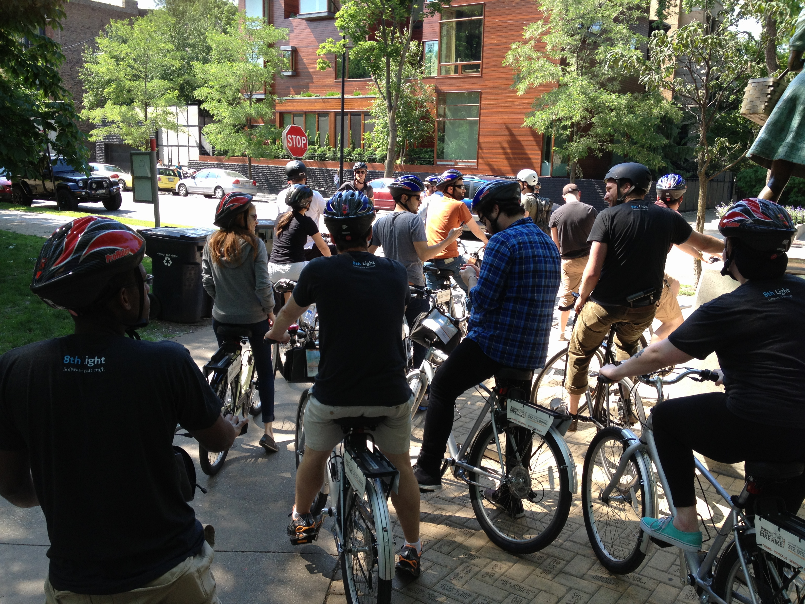

Chicago
June 17, 2013

Two weeks ago, myself and four coworkers traveled to visit our home office in Chicago. It was my first time experiencing flying after what I will affectionately refer to here as the "Baltimore Flying Fiasco of 2011". Of course, as most people do, I learned it was not that bad and really quite great. After two and a half hours, we were in a completely different and uniquely beautiful place, so it was all well worth it.
We stayed in a hotel relatively close to work. The first night we got in late--around 10:30 PM--and we still had to fetch water, chapstick, and other small comforts for our hotel rooms. This gave us an opportunity to get a glimpse of the beautiful city all lit up at night.
I awoke in the morning quite early because of the time difference, and was greeted by a beautiful sunrise over the skyscrapers. The picture does it no justice, really.

We saw lots of amazing sights just on our walk into work on the first day.  Throughout our visit, we got to go to some really really cool places to eat including the French Market which had several different vendors selling all kinds of food. There was a fresh fruit smoothie place, a korean place (I got bulgogi), French food, fresh fish and meats, organic vegetables, a raw/vegan bar, and sushi! There was no shortage of amazing stuff. Our first night, we went out to enjoy drinks (well, not me) and foie gras (yes, me!) It was delightful.
Throughout our visit, we got to go to some really really cool places to eat including the French Market which had several different vendors selling all kinds of food. There was a fresh fruit smoothie place, a korean place (I got bulgogi), French food, fresh fish and meats, organic vegetables, a raw/vegan bar, and sushi! There was no shortage of amazing stuff. Our first night, we went out to enjoy drinks (well, not me) and foie gras (yes, me!) It was delightful.
Seeing how immense the city really is was the most amazing thing to me as a first time Chicago goer.
We worked with new people and at the end, got to go on a company bike ride through town. We got to see Lake Michigan and feel the amazing cool breeze blowing from the northeast that a storm two nights prior brought over.
